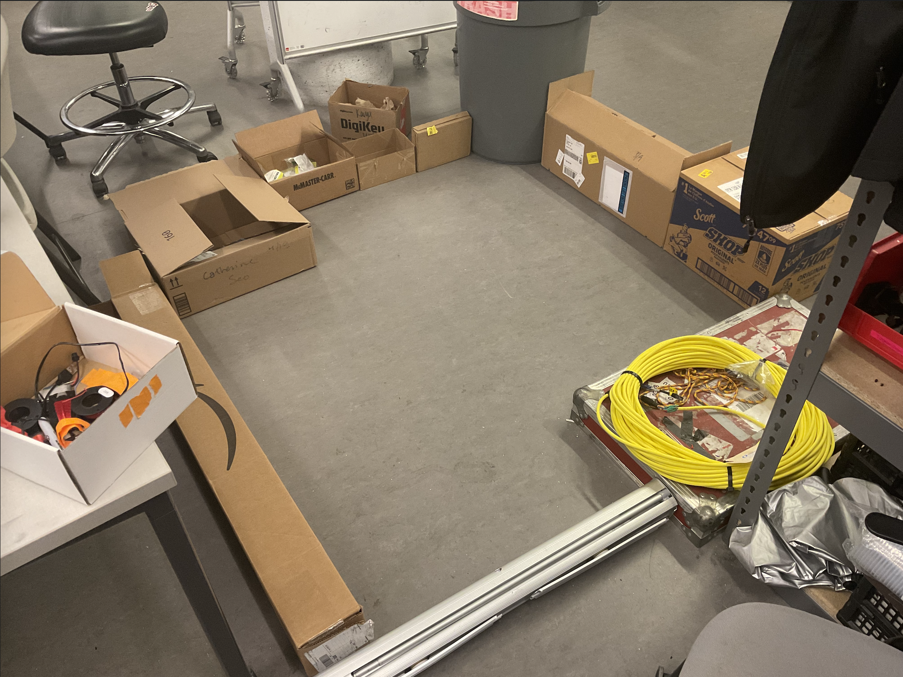
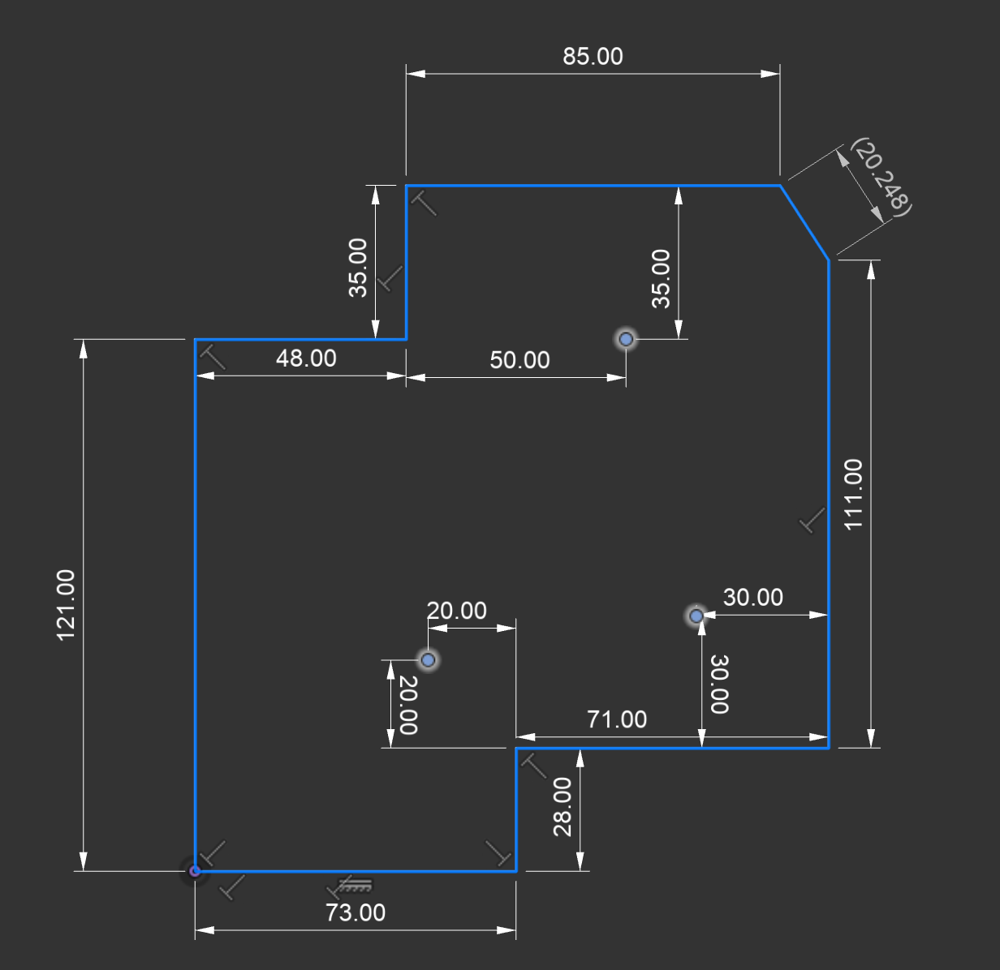
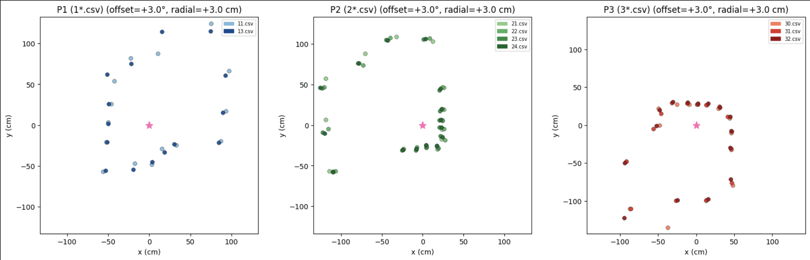
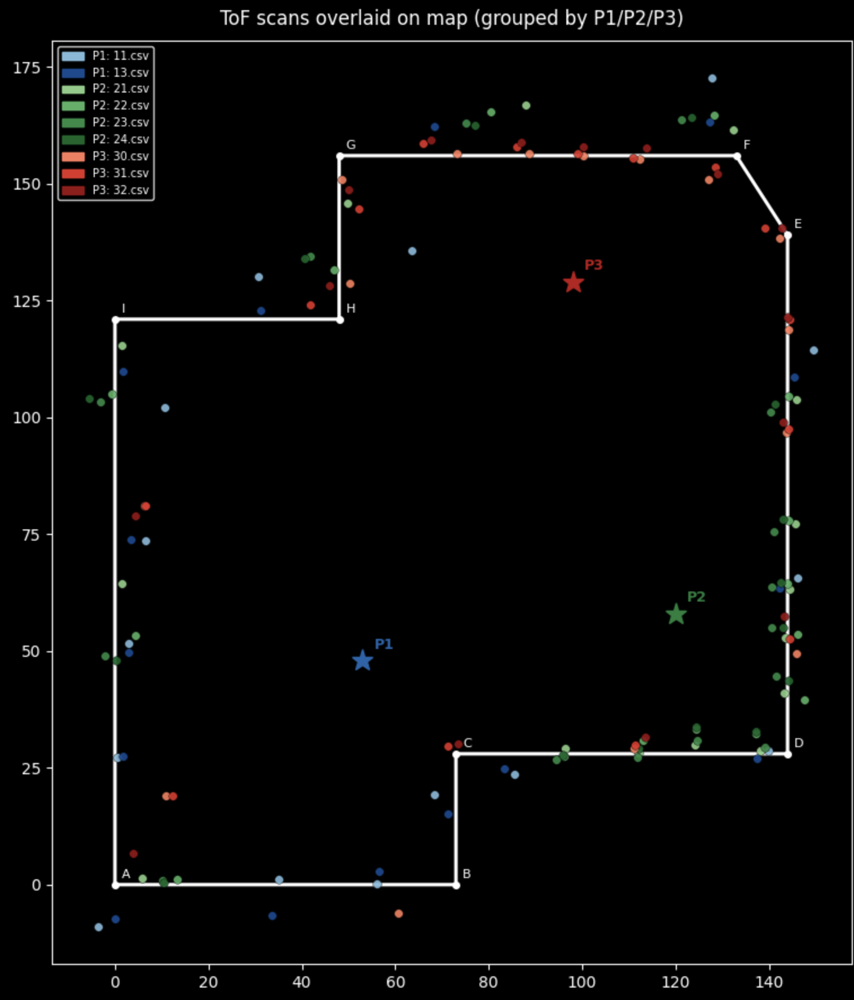

Lab 9: Mapping
Overview
The goal of this lab was to build a map of a static room by placing the robot at several marked positions, spinning it on its axis, and collecting Time-of-Flight (ToF) distance readings at each angular step. The resulting point clouds were merged into a single inertial reference frame and used to manually estimate wall positions as line segments.
Due to lack of access to the lab space, the environment was replicated at home using cardboard boxes arranged to approximate the room geometry.


Control
I used PID control on orientation, with the yaw angle derived from raw gyroscope integration. At each loop
iteration, the firmware reads the ICM-20948's Z-axis gyro rate (myICM.gyrZ()), multiplies
by dt, and accumulates it into yaw_gyro_deg. A 5 Hz low-pass filter is then applied
to smooth the signal before it is fed into the PID error term. The robot executes 15 steps of 24° each,
completing a full 360° rotation. After each step, a single ToF reading is taken.
PID gains: Kp = 0.1, Ki = 0.2, Kd = 0.01. Additional parameters:
duration_ms = 1500, min_pwm = 120, max_pwm = 255,
loop_period_ms = 10 ms.
A 2° deadband resets the integral term when the error is small, preventing windup near the setpoint.
while ((millis() - start_ms) < (unsigned long)duration_ms && yaw_log_count < yaw_log_len) {
unsigned long now_us = micros();
if (myICM.dataReady()) {
myICM.getAGMT();
float gz = myICM.gyrZ();
float dt_s = ((float)(now_us - yaw_last_time_us)) / 1000000.0f;
yaw_gyro_deg += gz * dt_s;
angle_deg = yaw_gyro_deg;
}
float alpha = lpf_alpha_from_dt(dt_s_lpf);
yaw_lpf_angle_deg = alpha * angle_deg + (1.0f - alpha) * yaw_lpf_angle_deg;
float error = yaw_setpoint_deg - yaw_lpf_angle_deg;
float kp_term = yaw_kp * error;
yaw_integral_unclamped += error * dt_s;
kd_term = yaw_kd * (error - yaw_prev_error) / dt_s;
if (fabsf(error) < deadband_deg) {
yaw_integral_unclamped = 0.0f; yaw_integral = 0.0f;
}
float u_unclamped = kp_term + yaw_ki * yaw_integral_unclamped + kd_term;
float frac = abs_u / (float)yaw_max_pwm;
float mapped = (float)yaw_min_pwm + frac * (float)(yaw_max_pwm - yaw_min_pwm);
u_pwm = (int)lroundf(mapped);
if (u_clamped < 0.0f) u_pwm = -u_pwm;
turn_in_place_signed(motor_pwm);
delay((unsigned long)loop_period_ms);
}
motors_coast();
lab9_record_step_after_yaw();Error Analysis
In the middle of a 4×4 m empty room, a single 24° PID step with ~1–2° drift accumulates over 15 steps. The observed total rotation was 361.27° rather than 360°, giving a maximum cumulative gyro error of ~1.3°. At a wall distance of 200 cm, a 1.3° angular error produces a lateral positional error of roughly 200 × sin(1.3°) ≈ 4.5 cm. Average error across steps is smaller since drift is not monotonic, estimated around 2–3 cm average lateral error.
Reading Out Distances
Three scan positions were used (coordinates in cm from the room origin at bottom-left):
| Label | Position (cm) | Scans |
|---|---|---|
| P1 | (53, 48) | 2 runs |
| P2 | (120, 58) | 4 runs |
| P3 | (98, 129) | 3 runs |
Each position was scanned multiple times to assess repeatability. At each step, after the PID loop
completed, a single blocking ToF ranging was triggered on distanceSensor1 (VL53L1X,
short-range mode):
static void lab9_record_step_after_yaw() {
distanceSensor1.startRanging();
unsigned long t0 = millis();
while (!distanceSensor1.checkForDataReady() && (millis() - t0) < 120) { delay(1); }
if (distanceSensor1.checkForDataReady()) {
mm = distanceSensor1.getDistance();
distanceSensor1.clearInterrupt();
}
distanceSensor1.stopRanging();
}This gives exactly 15 ToF readings per 360° rotation, spaced at nominal 24° increments. The angle assigned to each reading is the actual integrated gyro yaw at the end of that step, not an assumed equal spacing. The robot was started in the same orientation at all positions.
Data was returned over BLE as L9ROW:yaw_deg,tof_mm notifications:
case LAB9_SESSION_GET_DATA: {
for (int i = 0; i < lab9_tof_n; i++) {
tx_estring_value.clear();
tx_estring_value.append("L9ROW:");
tx_estring_value.append(lab9_yaw_last_deg[i]);
tx_estring_value.append(",");
tx_estring_value.append(lab9_tof_mm[i]);
tx_characteristic_string.writeValue(tx_estring_value.c_str());
delay(1);
}
lab9_tof_n = 0;
break;
}def parse_l9row(s):
if not s.startswith("L9ROW:"): return None
parts = s[6:].split(",")
return float(parts[0]), int(round(float(parts[1])))
def lab9_string_notification_handler(_uuid, byte_array):
raw = ble.bytearray_to_string(byte_array).strip()
row = parse_l9row(raw)
if row:
lab9_session_yaw_deg.append(row[0])
lab9_session_tof_mm.append(row[1])Individual scans were sanity-checked using polar plots. The distance readings at each heading were compared against the expected geometry of the cardboard box environment.

To check repeatability, multiple scans at the same position were overlaid. Scatter between runs was small — per-step yaw readings were consistently near 24° (e.g., 24.72°, 23.72°), with cumulative drift under 2° over the full rotation. P2 required 4 attempts before a clean scan was achieved due to inconsistent on-axis rotation at that position. Per-position angular offsets (P1 +0°, P2 −6°, P3 −7°, plus a global +3° convention correction) were applied to align the point clouds. Blue shades correspond to P1, green to P2, and red to P3; star markers indicate the robot's position at each scan.

Merge and Plot Readings
Transformation Matrices
The ToF reading at each step is a scalar distance r measured along the robot's current heading. To convert to world coordinates, the following transformation is applied.
The sensor is mounted 3 cm from the robot's center of rotation, so first a radial offset correction is applied:
r_corrected = r_cm + 3.0
The robot rotates clockwise (positive CW from above), which is the negative direction in standard math convention. The heading is therefore inverted and mapped to a math angle θ measured CCW from +x:
θ = 180° − (−cumulative_deg + offset_deg)
The world-frame coordinates are then:
x_world = px + r_corrected × cos(θ)
y_world = py + r_corrected × sin(θ)
where (px, py) is the robot's position in the room. In matrix form, each reading is
transformed as:
[x_world] [cos(θ) -sin(θ) px] [r_corrected]
[y_world] = [sin(θ) cos(θ) py] [ 0 ]
[ 1 ] [ 0 0 1] [ 1 ]def heading_to_theta_math_deg(cumulative_deg, invert_ccw=False, offset_deg=0.0):
base = -cumulative_deg if invert_ccw else cumulative_deg
return 180.0 - (base + offset_deg)
def load_scan_xy_world(csv_path, px, py, invert_ccw=False, offset_deg=0.0, radial_offset_cm=0.0):
data = np.genfromtxt(csv_path, delimiter=',', names=True, dtype=float)
r_cm = data['tof_mm'] / 10.0
r_cm = np.maximum(r_cm + radial_offset_cm, 0.0)
theta = np.deg2rad(heading_to_theta_math_deg(data['cumulative_deg'], invert_ccw, offset_deg))
x = px + r_cm * np.cos(theta)
y = py + r_cm * np.sin(theta)
return x, yLine-Based Map
Walls were estimated manually by fitting straight line segments to the scatter plot clusters. The room boundary is a 9-sided non-convex polygon defined by vertices (in cm, origin at bottom-left corner):
| Vertex | x (cm) | y (cm) |
|---|---|---|
| A | 0 | 0 |
| B | 73 | 0 |
| C | 73 | 28 |
| D | 144 | 28 |
| E | 144 | 139 |
| F | 133 | 156 |
| G | 48 | 156 |
| H | 48 | 121 |
| I | 0 | 121 |
The wall segments as lists for simulator import:
x_start = [0, 73, 73, 144, 144, 133, 48, 48, 0]
x_end = [73, 73, 144, 144, 133, 48, 48, 0, 0]
y_start = [0, 0, 28, 28, 139, 156, 156, 121, 121]
y_end = [0, 28, 28, 139, 156, 156, 121, 121, 0]Discussion
The angular offset corrections applied during post-processing (−6° at P2, −7° at P3) were caused by the
robot being placed in a slightly different starting orientation at those positions relative to P1. Since
the robot was not precisely aligned to a fixed reference direction at each scan, a small rotational
offset in the reconstructed point cloud was expected. These were corrected by visually aligning the
point cloud to the known wall geometry and adjusting rotation_offset_p_deg accordingly.
The 3 cm radial offset correction accounts for the physical separation between the ToF sensor and the robot's pivot center. Without this correction, all points would be shifted slightly inward from their true positions.
The main sources of error in the final map are cumulative gyro drift (~1–2° per full rotation) and off-axis rotation — if the robot doesn't spin cleanly about its center, the point cloud smears. P2 required four attempts for this reason. Despite these limitations, the resulting line segments closely match the known cardboard box geometry, validating the approach.